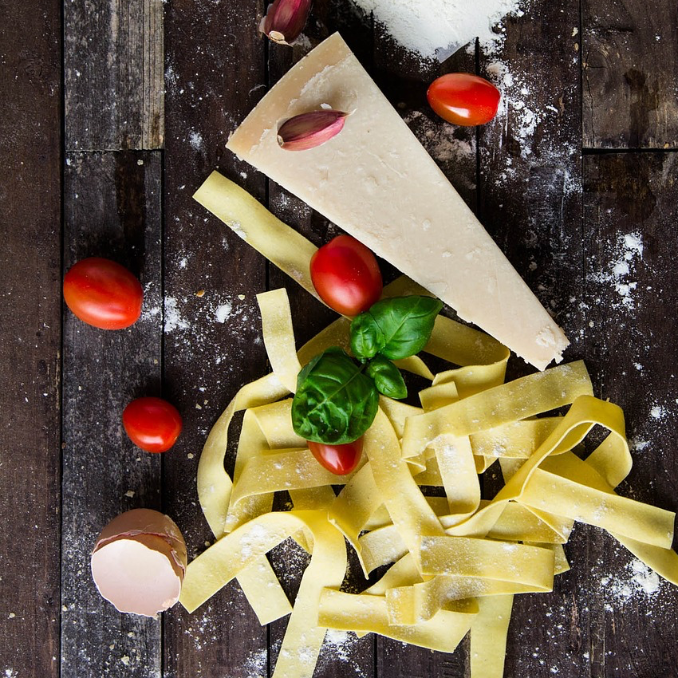

<!DOCTYPE html>
<html ng-app="SpoonReadMe">
  <head>
    <meta charset="utf-8">
    
    <!-- NEW CODE TESTING // This title will be the tab's name on the browser
  -->
    <title>Home</title>

    <meta name="viewport" content="initial-scale=1, maximum-scale=1, user-scalable=no, width=device-width">

    <meta name="author" content="Parynaz Adamy">
    <title></title>

    <link rel="manifest" href="manifest.json">

    <!-- un-comment this code to enable service worker
    <script>
      if ('serviceWorker' in navigator) {
        navigator.serviceWorker.register('service-worker.js')
          .then(() => console.log('service worker installed'))
          .catch(err => console.log('Error', err));
      }
    </script>-->

    <link href="lib/ionic/css/ionic.css" rel="stylesheet">

    <link href="css/style.css" rel="stylesheet">


    <!-- IF using Sass (run gulp sass first), then uncomment below and remove the CSS includes above
    <link href="css/ionic.app.css" rel="stylesheet">
    -->    
    <script type='text/javascript' src='lib/jquery-3.1.1.min.js'></script>

    <script src="lib/ionic/js/ionic.bundle.js"></script>


    <script type="text/javascript" src="lib/lodash/dist/lodash.js"></script>


<!-- <script src="lib/ionic-multiselect/dist/ionic-multiselect.min.js"></script> -->

    <!-- cordova script (this will be a 404 during development) -->
    <script src="cordova.js"></script>    

    <script type="text/javascript" src="lib/angularjs-dropdown-multiselect/src/angularjs-dropdown-multiselect.js"></script>
    <!-- your app's js -->
    <script src="js/app.js"></script>
   
   <script src="js/controllers/main.js"></script>
   <script src="js/controllers/home.js"></script>
   <script src="js/controllers/help.js"></script>
   <script src="js/controllers/import.js"></script>
   <script src="js/controllers/recipedetails.js"></script>
   <script src="js/controllers/saved.js"></script>
   <script src="js/controllers/search.js"></script>
   <script src="js/controllers/settings.js"></script>
   <script src="js/controllers/donate.js"></script>


  <script src="js/services.js"></script>
  <script src="js/keys.js"></script>

  <script src='lib/ngInfiniteScroll-1.0.0/build/ng-infinite-scroll.min.js'></script>


<script src="lib/angular-admob/angular-admob.js"></script>


</head>

<body ng-controller="MainCtrl">
   
  <ion-nav-view></ion-nav-view>


  <script id="templates/event-menu.html" type="text/ng-template">
      <ion-side-menus enable-menu-with-back-views="false">

        <ion-side-menu-content>
          <ion-nav-bar class="bar-positive mynavbar">
             <ion-nav-back-button>     
           </ion-nav-back-button>

            <ion-nav-buttons side="left" >
              <button class="menu-button" menu-toggle="left"></button>
            </ion-nav-buttons>

            </ion-nav-bar>

          <ion-nav-view name="menuContent"></ion-nav-view>
        </ion-side-menu-content> 

        <ion-side-menu side="left">
          <ion-header-bar class="mymenu">
          

          </ion-header-bar>
          
          <ion-content style="background-color: #b0b0b0;">

          <p class="MainMenuPadding"></p>
            <ul class="list">

              <a nav-clear menu-close ui-sref="event.donate" ui-sref-active="current" class="item item-icon-left mymenubar">
              <i></i>
              <p class="menuTitle">Donate</p>

              </a>

              <a nav-clear menu-close ui-sref="event.home" ui-sref-active="current" class="item item-icon-left mymenubar">
              <i></i>
              <p class="menuTitle">Home</p>

              </a>
        
              <a nav-clear menu-close ui-sref="event.search" ui-sref-active="current" class="item item-icon-left mymenubar">
              <i></i>
              <p class="menuTitle">Search</p>
              </a>
           
              <a nav-clear menu-close ui-sref="event.import" ui-sref-active="current" class="item item-icon-left mymenubar">
              <i></i>
              <p class="menuTitle">Import</p>
              </a>
            
              <a nav-clear menu-close ui-sref="event.saved" ui-sref-active="current" class="item item-icon-left mymenubar">
              <i></i>
              <p class="menuTitle">Saved</p>
              </a>
            
              <a nav-clear menu-close ui-sref="event.settings" ui-sref-active="current" class="item item-icon-left mymenubar">
              <i></i>
              <p class="menuTitle">Settings</p>
              </a>
           
              <a nav-clear menu-close ui-sref="event.help" ui-sref-active="current" class="item item-icon-left mymenubar">
              <i></i>
              <p class="menuTitle">Help</p>
              </a>

            </ul>
          </ion-content>
        </ion-side-menu>

      </ion-side-menus>
    </script>


    <script src="templates/home.html" type="text/ng-template">
    </script>


    <script src="templates/search.html" type="text/ng-template">
    </script>


    <script src="templates/saved.html" type="text/ng-template">
    </script>


    <script src="templates/settings.html" type="text/ng-template">
    </script>

    <script src="templates/help.html" type="text/ng-template">
    </script>


</body>
</html>

